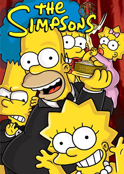
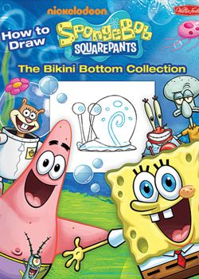
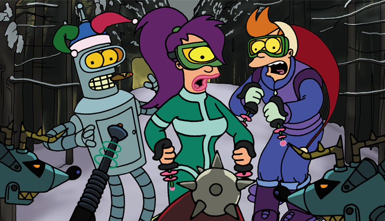
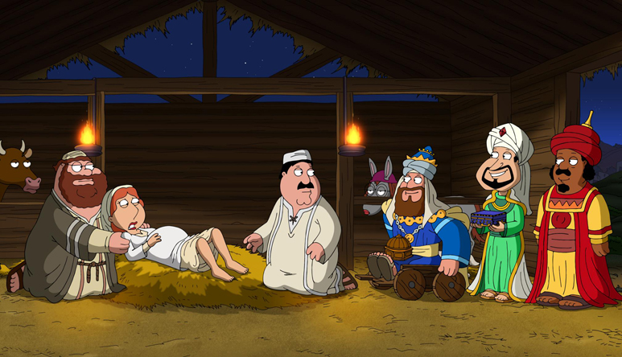
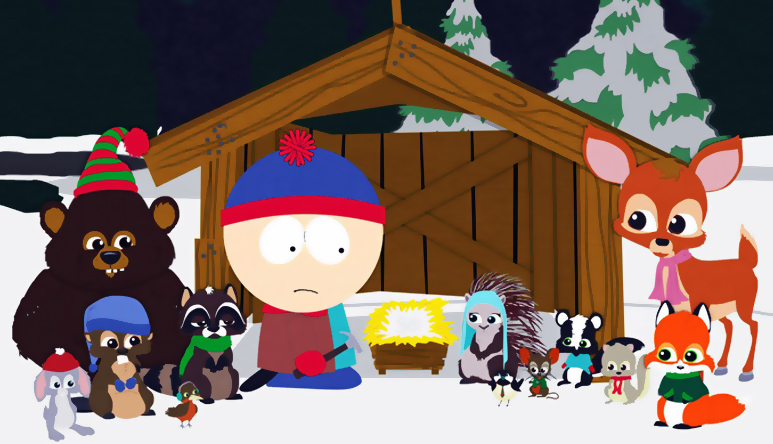
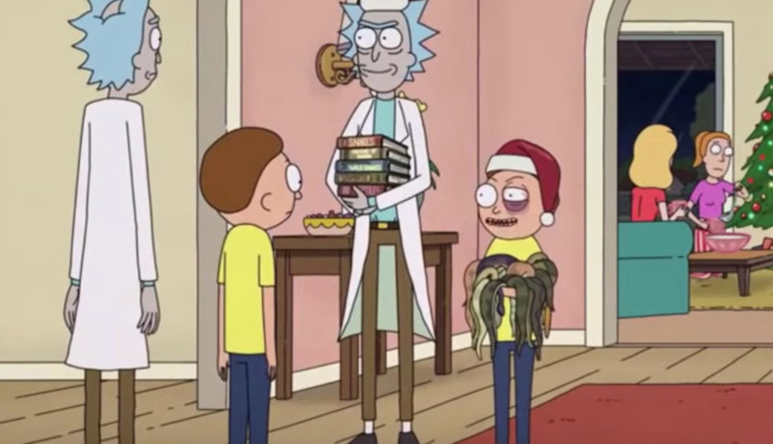
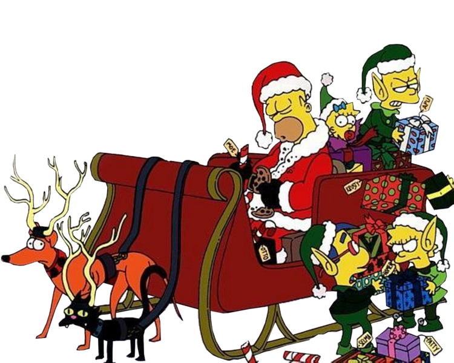

Ласкаво просимо до мультпорталу MULTFUN! Тут ви можете переглянути будь-яку серію улюбленого мультфільму дитинства. Це все із максимальною зручністю у вигляді плавності, приємного на око дизайну та надзвичайно малої кількості реклами. У нас також є YouTube- і Телеграм-канал, де ми викладаємо майстерно складені до купи анонси, а іноді й повні серії мультів, доступні для завантаження!
Весь розміщений контент на ресурсі "www.multfun.ho.ua" є матеріалом, що знаходиться у вільному доступі в мережі Інтернет. Якщо ви є правовласником авторських прав контенту, що використовуються на даному ресурсі, адміністрація готова надати Вам сприяння і видалити з даного сайту відповідні матеріали. При виникненні спірних ситуацій ми просимо правовласника надіслати нам лист в електронному вигляді, де необхідно вказати наступне:
1) Документальне підтвердження Ваших прав на матеріал, захищений авторським правом.
2) Відсканований документ з печаткою.
3) Email з офіційного поштового домена компанії правовласника.
4) Інша інформація, що дозволяє однозначно ідентифікувати Вас як правовласника даного контенту.
5) Прямі посилання на сторінки сайту, які містять дані, опубліковані з порушенням авторських прав.
При отриманні вашого листа, який містить ці підтвердження, протягом 48 годин ми видалимо з сайту захищений авторським правом контент.
З усіх питань звертатися на email: qtvfun@gmail.com
Сімпсони

«Сімпсони» — американський анімаційний серіал, створений Меттом Ґрейнінґом для компанії FOX. Мультсеріал — сатирична пародія на стиль життя середнього класу США, втілена в сім'ї Сімпсонів, яка складається з Гомера, Мардж, Барта, Ліси та Меґґі. Більшість подій відбуваються у вигаданому містечку Спрингфілді.
Дивитись онлайн
Південний Парк
«Південний Парк» — американський анімаційний серіал, створений учасниками рок-гурту DVDA Меттом Стоуном і Треєм Паркером. Випускається кабельним телеканалом Comedy Central з 1997 року. Основу сюжету складають пригоди чотирьох хлопчиків і їхніх друзів, що живуть у маленькому містечку Саут-Парк, штат Колорадо.
Дивитись онлайн
Гріфіни
«Гріфіни» або «Сім’янин» — американський комедійно-сатиричний мультсеріал, створений Сетом Макфарлейном у 1999 році. Серіал розповідає про життя Пітера Гріфіна та його родини, яка проживає в Куагоґу, вигаданому передмісті Провіденса, столиці Род-Айленду.
Дивитись онлайн
Рік та Морті
«Рік і Морті» — американський мультсеріал, створений Деном Гармоном і Джастіном Ройландом, прем'єра якого відбулася 2 грудня 2013 року на програмному блоці Adult Swim на телеканалі Cartoon Network. Ройланд озвучив головних персонажів: Ріка, вченого-алкоголіка, та його онука Морті.
Дивитись онлайн
Футурама
«Футурама» — культовий американський анімаційний серіал, створений на студії «20th Century Fox» Метом Ґрейнінґом і Девідом Коеном, авторами мультсеріалу «Сімпсони». Дія серіалу відбувається в Новому Нью-Йорку в 3000 році. У США серіал демонстрували на Fox Network з 28 березня 1999 року до 10 серпня 2003 року.
Дивитись онлайн
Губка Боб Квадратні Штани
Взято з сайту moviestape.net

«Губка Боб Квадратні Штани» — культовий американський мультсеріал виробництва телеканалу Nickelodeon, який вийшов до ефіру влітку 1999 року та став однією з найпопулярніших анімаційних телевізійних програм, а також фактичним «обличчям» каналу «Nickelodeon».
Дивитись онлайн
Таємниці Ґравіті Фолз

«Таємниці Ґравіті Фолз» — американський анімаційний телевізійний серіал Алекса Гірша, створений студією «Disney Television Animation» для каналу Disney Channel та Disney XD. Перший епізод першого сезону було попередньо показано 15 червня 2012 року; офіційна прем’єра відбулася 29 червня 2012 року.
Дивитись онлайн
Американський тато
«Американський тато!» — американський комедійний мультсеріал виробництва студії «Андердог» та «Фазі Дор» за замовленням 20th Century Fox. Він був придуманий і розроблений, в основному, Сетом МакФарлейном, творцем серіалу «Гріффіни».
Дивитись онлайн
Вибачте, щось пішло не так :(
Як провести Хелловін з Multfun?
Скоро 31 жовтня - довгоочікуваний Хелловін! Останнім часом це свято набирає все більше обертів в Україні, що безумовно відіграє свою роль у нашому суспільному житті. На нашу думку, цього свята не треба цуратися, адже передусім це - атмосферне свято осені, коли люди відчувають панівну в повітрі містику та насолоджуються часом, проведеним із друзями. Хелловін можна святкувати в місцевому торгівельному центрі, піти додому до друга або ж самостійно організувати вечірку хоч у своїй оселі. Хелловін головне мати у серці: не обов’язково різати габруза чи вішати орнаменти в кімнаті, якщо маєш фантазію та Multfun.
У цій статті ми опишемо, як відсвяткувати Хелловін, якщо між походами деінде є вільний час або якщо в тебе просто немає костюма.
У цьому випадку на допомогу приходить Multfun зі своєю хелловінською підбіркою! Хелловінські серії на будь-який смак! Тут будуть описи мультів та серій, які ви можете переглянути на новому сайті.
1. Сімпсони
Жовта сімейка повертається у тридцятирічному циклi “Treehouse of Horror”. Кожен такий спецвипуск складається із декількох шалених історій, які кепкують із кліше всіх жахів, при цьому показуючи глядачеві справді захоплюючу історію.
Найкращі тематичні спецвипуски на думку членів команди:
Treehouse of Horror V (шостий сезон)
*посилання чи кнопка, якщо так буде*
Treehouse of Horror XI (дванадцятий сезон)
*посилання чи кнопка, якщо так буде*
Treehouse of Horror XIX (двадцятий сезон)
Treehouse of Horror XIII (чотирнадцятий сезон)
Treehouse of Horror III (четвертий сезон)
Treehouse of Horror VII (восьмий сезон)
3. Південний Парк
"Сини відьми", шоста серія у двадцять першому сезоні, креативно глузує із секс-скандалів у Голлівуді. Радимо почати з нього. Продовжувати можете з “Пінкаєм” – сьомою серією всього серіалу, сповненою жартами про Майкла Джексона та несамовитим матюччям. Але найкращим хелловінським випуском досі вважається “Пекло на Землі 2006” – 11 епізод 10 сезону. Справжнє дійство, що жодної секунди не дає перепочити. Сам Диявол приходить на Землю, щоб влаштувати на ній пекельну тусу. Дивитися всі атеїстам і фанатам чорного гумору!
4. Гравіті Фолз
Думаючи про Хелловін та цей мульт, згадуються три серії, одна з яких лише частково пов’язана зі святом. Та і дії усього мультсеріалу відбуваються улітку, тому виходить така цікавинка. Належать вони до двох сезонів. Перша має назву “Літоувін”, що вже є очевидною відсилкою на Хелловін. За рахунком це дванадцята серія першого сезону. І друга серія, яку ми згадуватимемо, - це “Невеличкий магазин жахіть” - данина Стівену Кінгу як автору “Ярмарку нічних жахіть”. Вона складається із трьох міні-історій, які розповідає Дядько Стен. Можливо, хелловінською можна назвати і десяту серію другого сезону, де Діппер допомагає Пасифіці позбавитися від привида у її сімейному маєтку. Даючи вам трішки тривії, у деяких країнах цій серії дали рейтинг 16+ через показ крові.
5. Губка Боб
Із десяти таких серій, найбільш улюбленими серед фанатів є дві. Тринадцята серія найпершого сезону є справжньою класикою, яка стає ще кращою завдяки старому стилю анімації, старанно намальованої руками. "Scaredy Pants", у якій Губка стає хелловінським привидом, обов’язкова до перегляду. Хоч друга конкретно і не є серією для Хелловіну, але всі інші, які такими є, на жаль, просто програють цій за сюжетом, гумором та атмосферою. “Graveyard Shift” — перша частина шістнадцятого епізоду другого сезону. Напевно, усі ще дітьми пам’ятають той самий жарт про Графа Дракулу, той саспенс із загадковою постаттю за “Красті-Крабом” та ту зловісну музику на фоні. Неймовірна хелловінська пригода.
Як провести Новий рік та Різдво з Multfun?
Новий рік скоро настане, а за ним слідує і Різдво. Наша команда вітає вас з цими святами, та бажає чудово їх провести. Ось вам добірка різдвяних серій мультфільмів
Футурама
2 сезон 4 серія. Як же без наших друзів? У центрі сюжету новорічного епізоду звісно ж Фрай, який дізнається про нові традиції Людини Х (раніше відомий як Різдво), коли він гуляє вулицями та вбиває усіх, кого зустрічає, через несправність. Не варто уявляти море крові, але багато смішних жартів тобі гарантовано під час перегляду цього епізоду.

Гріфіни
11 сезон 8 серія. «Гріфіни», як завжди, у сатиричній манері вирішили переповісти історію народження Ісуса, але таким чином, на який наважився б лише серіал Сета Макфарлейна. Чому слід дивитися це? Цей епізод, безумовно, не той, який варто дивитись у колі родичів, адже вони можуть не зрозуміти безлічі жартів. Але, якщо ти є шанувальником «Сімпсонів», тобі безперечно сподобається. Приємним плюс є досить веселе закінчення.

Південний Парк
8 сезон 14 серія. Серед 23 сезонів популярного анімаційного мультфільму для дорослих ми акцентуємо увагу на тому, де Стен погоджується допомогти лісовим істотам, які уміють розмовляти. Звісно усе перетворюється, у кращих традиціях серіалу, в Різдвяну катастрофу. Але це не заважає епізоду бути смішним та сповненим новорічного духу.

Рік та Морті
4 сезон 5 серія. Нова серія мультфільму - різдвяна спеціальна пропозиція, весела пародія на "Термінатор" і чудовий гумор на тему подорожей у часі і причинно-наслідкових зв'язків у всесвіті.

Мультфільми

Як провести Новий рік з Multfun?
Скоро Новий рік - довгоочікуване свято! Ось вам підбірка серій мультів на це свято
Читати далі
Мультфільми для дорослих
Мультфільми для дітей